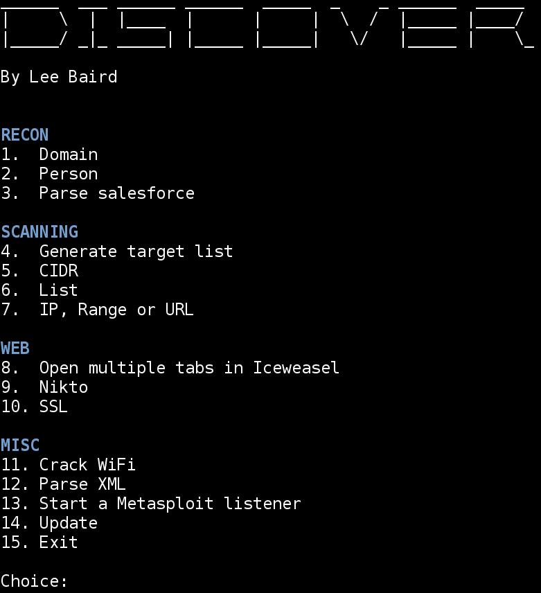
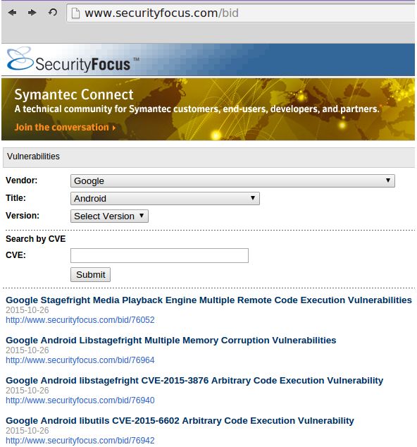
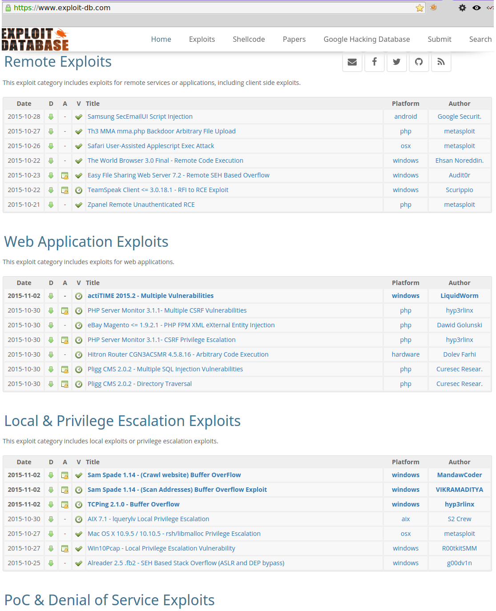
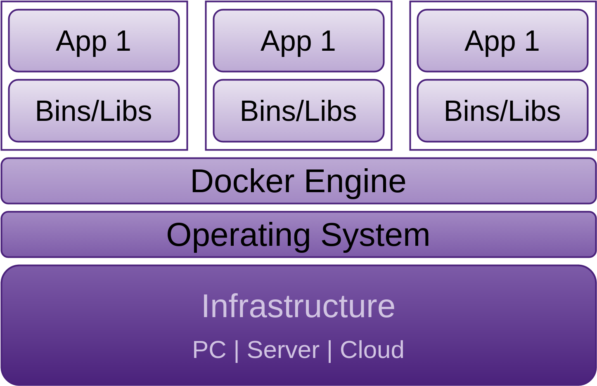
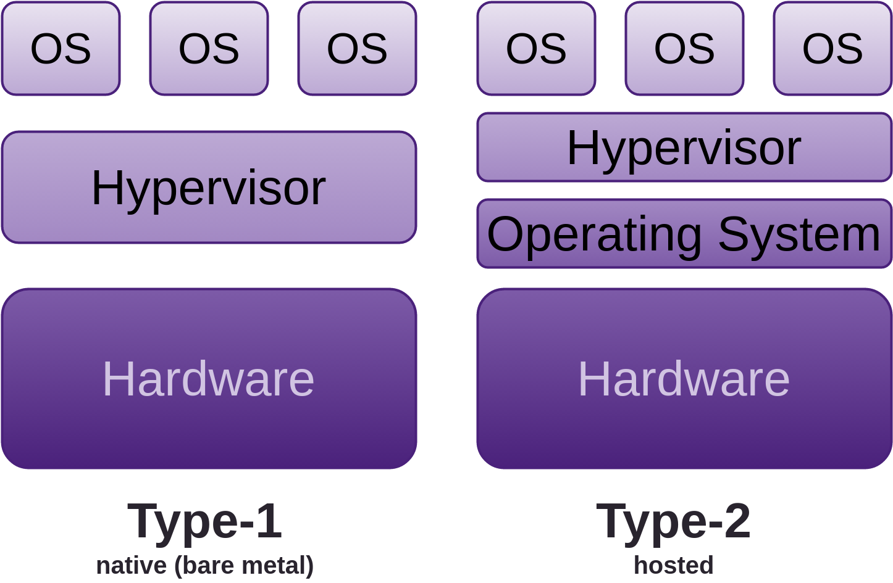
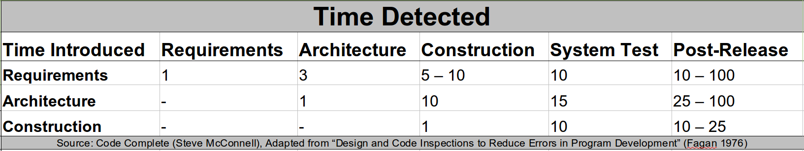
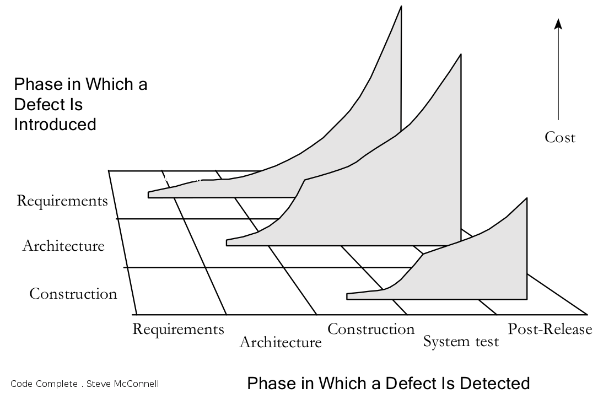
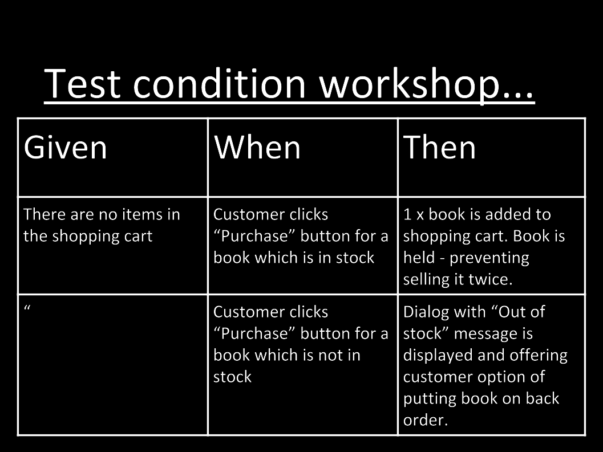
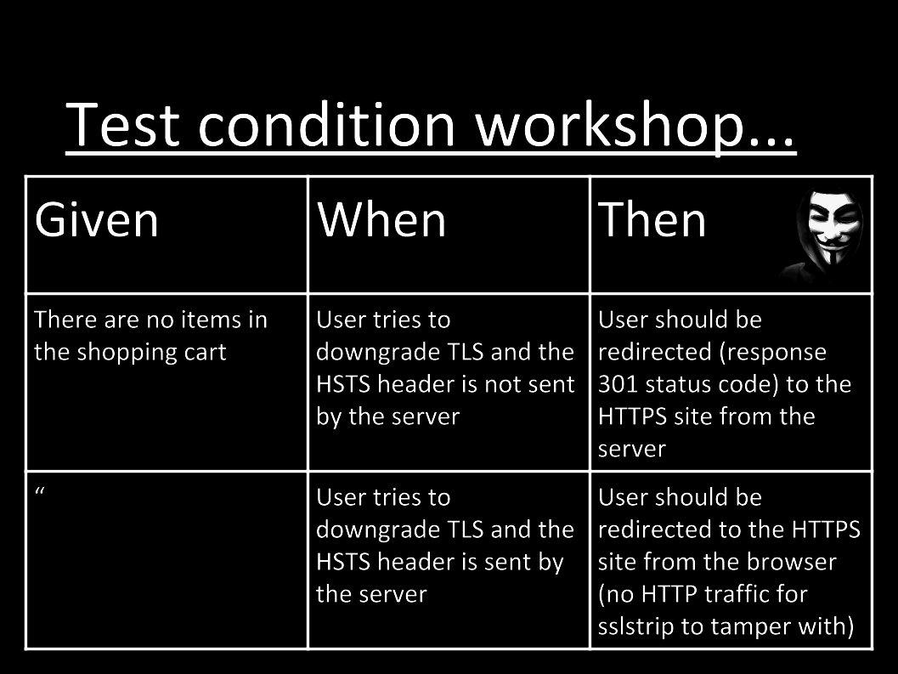

4. Process and Practises
This chapter details the common work-flow of a penetration tester, followed with tried and tested practises to augment your agile development work-flow.
Approaching the security “problem” from a penetration tester’s point of view (red team) can be quite different than coming at it from a software developer’s point of view (blue team). The software developer’s role as a blue team member (defender) requires heightened awareness and additional perspective, some of which I’ll offer here.
- The penetration tester tries to find all the faults in your system. This is not limited to the technology aspect either, as we address throughout this book
- As a web developer, you are more focused on delivering a solution that makes a problem less of a problem. Often, you’re not thinking so much about what could go wrong, rather more focused on how to make it work
These two disciplines can and do work in harmony together. There is a real need for improving security-related awareness for software developers, including skills and knowledge. Since this book is focused on the web developer, it is my intention to show you, as a web developer, how to take the lessons learned from the penetration tester’s perspective, and apply some of them to your own work and life. Yes, security needs to become part of who you are, and grow with you as you do. I have the advantage of working in both of these disciplines, as well as have been on some very successful Scrum teams, often as Scrum Master. This has enabled relatively easy empathy with both sides of the red/blue discussion, and the ability to take the best from one side, then apply it to the other. Both can, in fact, exist in harmony.
Penetration Testing
Following are processes and procedures commonly utilized by a penetration tester.
Reconnaissance
Reconnaissance, or recon, is the act of information gathering. The quieter you can be during this phase, the less likely you will be to raise suspicions or trigger your client’s defences.
Here, we want to gather as much potentially useful information as possible for use in later phases. This is where we start to obtain information about services, and other software being used, moving from the passive to the more active techniques. We must learn as much as possible about the people who are in scope for the target organization, and how they are related to that organisation, their roles, skills, and potential level of privilege and access.
This allows us to create effective attack strategies, including non-technical aspects such as physical security and pretexts for the people we want to exploit.
Reconnaissance Forms
Information gathering can and should be done (initially) in such a way that the target does not know you are doing it (passive). However, reconnaissance can achieve “noise” levels so loud that the target should absolutely know you are doing it (active). Unfortunately, all too often target organisations do not notice more active assessment due to insufficient logging, monitoring, and alerting, as discussed in several of the following chapters. These activities also require that someone actually take notice, as discussed in the People chapter specific to engagement.
Passive
Passive reconnaissance is the phase when information gathering cannot be detected by the target. Information is gathered indirectly from the target, often from:
- Sources that have had a direct relationship with the target
- Social media web sites
- Search engines
The pen tester or attacker cannot directly probe the target, they must use third party information. Sometimes this may be out of date, so confirmation and validation are desirable, even required. This is usually not too difficult, but it takes more time than if the passive constraint was lifted, and the pen tester could probe directly.
If you refer back to the diagram in the 30,000’ view chapter under Identify Risks, you will note “Your Organisation” and indirect relationships to the “Competitor”. You will see that your competitor, or attacker, has what is known as a passive or third party relationship with you via your bank, accountants, domain and/or technical consultants, professional services, telcos, ISP and any other number of intermediaries. These include social media, whois, DNS (and reverse) lookups and endless amounts of information floating available via the Internet and even our physical cities. Once you have acquired the names of the technology workers at the target organisation, you can search technology specific forums to see what sort of questions they are asking or possibly blogging about.
Semi-Active
Semi-active reconnaissance includes gathering information directly from the target, but in a manner that looks non-suspicious, as if it was any casual browser, passer-by, or normal Internet traffic. The nmap -sV example below almost fits into this form.
Active
Active reconnaissance involves interacting with the target directly, engaging in activities such as:
- Snooping physical premises
- Port scanning the entire range
nmap -p- <target>and some of the aggressive nmap scanning modes shown below - Spidering public facing resources. Directories and files, often public without the administrators realising it. If they ran a spidering tool against their servers they would see all the publicly accessible resources
- Banner grabbing and probing, which we address below under the Service Fingerprinting section
Netcat
Netcat, the network Swiss army knife, is not nearly as configurable as a dedicated port scanner, but can be used to scan ports, as well as:
- Host a web page
- Send files
- Poke at things to elicit responses
- Listen for a reverse shell:
nc -l <listening port> - So many other uses…
Consider these uses.
# -z is the argument to instruct for a port scan.
# 1-1000 is the port range
# -r randomises the order of port scans to make it a little less obvious
# -w 1 instructs nc to wait 1 second for a response to each port.
nc -v -r -w 1 -z <target> 1-1000
# This won't conceal the attacker's IP address.
# For example: sshd logs will show a failed attempt from specific IP address.
# Netcat is a rather blunt tool for port scanning.
Nmap
Hardened Web Server
Following is an example using Nmap against a hardened target, with an SSH daemon and web server running…
Using the aggressive option, -A, the pen tester makes a lot of noise, and any logs under even the most casual inspection by a system administrator, should clearly identify Nmap probes.
# Attempt to detect hardened target OS and services running on it.
nmap -A <target>
for <target> (<target ip>)
Host is up (0.0014s latency).
rDNS record for <target ip>: <target>
Not shown: 997 closed ports
PORT STATE SERVICE VERSION
23/tcp filtered telnet
22/tcp open tcpwrapped
2000/tcp open http Node.js (Express middleware)
|_http-title: title
No exact OS matches for host
(If you know what OS is running on it, see http://nmap.org/submit/ ).
TCP/IP fingerprint:
# Some more info that isn't really helpful
Network Distance: 2 hops
TRACEROUTE (using port 139/tcp)
HOP RTT ADDRESS
1 2.58 ms <target router> (<target router ip>)
2 1.79 ms <target> (<target ip>)
OS and Service detection performed.
Please report any incorrect results at http://nmap.org/submit/ .
Nmap done: 1 IP address (1 host up) scanned in 35.18 seconds
Using the service detection option, -sV, the results provide almost as much information. Even with the intensity set to maximum, the pen tester makes very little noise, and if the logs are under review, the chance of missing these probes is likely. The only indicator that really stands out at all is the sshd auth request failure. As there are only two such references, it’s likely that a system administrator wouldn’t think that much of it. Without the sshd entries, this would fall under the Semi-Active phase mentioned above.
9 <target>
Metasploitable 2
An example of using Nmap against an un-hardened target follows. In later chapters I will discuss how to go about the hardening process. I have also provided quite a bit of information specific to hardening servers on my blog.
# Attempt to detect un-hardened target OS and services running on it.
nmap -A <target>
6.47 ( http://nmap.org ) at 2015-11-12 20:17 NZDT
Nmap scan report for <target>
Host is up (0.00067s latency).
Not shown: 977 closed ports
PORT STATE SERVICE VERSION
21/tcp open ftp vsftpd 2.3.4
|_ftp-anon: Anonymous FTP login allowed (FTP code 230)
22/tcp open ssh OpenSSH 4.7p1 Debian 8ubuntu1 (protocol 2.0)
| ssh-hostkey:
| 1024 60:0f:cf:e1:c0:5f:6a:74:d6:90:24:fa:c4:d5:6c:cd (DSA)
|_ 2048 56:56:24:0f:21:1d:de:a7:2b:ae:61:b1:24:3d:e8:f3 (RSA)
23/tcp open telnet Linux telnetd
25/tcp open smtp Postfix smtpd
|_smtp-commands: metasploitable.localdomain, PIPELINING, SIZE 10240000, VRFY, ETRN, STARTTLS,\
ENHANCEDSTATUSCODES, 8BITMIME, DSN,
| ssl-cert: Subject: commonName=ubuntu804-base.localdomain/organizationName=OCOSA/stateOrProv\
inceName=There is no such thing outside US/countryName=XX
| Not valid before: 2010-03-17T13:07:45+00:00
|_Not valid after: 2010-04-16T14:07:45+00:00
|_ssl-date: 2015-11-12T07:17:50+00:00; -2s from local time.
53/tcp open domain ISC BIND 9.4.2
| dns-nsid:
|_ bind.version: 9.4.2
80/tcp open http Apache httpd 2.2.8 ((Ubuntu) DAV/2)
|_http-methods: No Allow or Public header in OPTIONS response (status code 200)
|_http-title: Metasploitable2 - Linux
111/tcp open rpcbind 2 (RPC #100000)
| rpcinfo:
| program version port/proto service
| 100000 2 111/tcp rpcbind
| 100000 2 111/udp rpcbind
| 100003 2,3,4 2049/tcp nfs
| 100003 2,3,4 2049/udp nfs
| 100005 1,2,3 37486/udp mountd
| 100005 1,2,3 52274/tcp mountd
| 100021 1,3,4 48376/tcp nlockmgr
| 100021 1,3,4 53826/udp nlockmgr
| 100024 1 36762/tcp status
|_ 100024 1 45387/udp status
139/tcp open netbios-ssn Samba smbd 3.X (workgroup: WORKGROUP)
445/tcp open netbios-ssn Samba smbd 3.X (workgroup: WORKGROUP)
512/tcp open exec netkit-rsh rexecd
513/tcp open login?
514/tcp open shell?
1099/tcp open java-rmi Java RMI Registry
1524/tcp open shell Metasploitable root shell
2049/tcp open nfs 2-4 (RPC #100003)
| rpcinfo:
| program version port/proto service
| 100000 2 111/tcp rpcbind
| 100000 2 111/udp rpcbind
| 100003 2,3,4 2049/tcp nfs
| 100003 2,3,4 2049/udp nfs
| 100005 1,2,3 37486/udp mountd
| 100005 1,2,3 52274/tcp mountd
| 100021 1,3,4 48376/tcp nlockmgr
| 100021 1,3,4 53826/udp nlockmgr
| 100024 1 36762/tcp status
|_ 100024 1 45387/udp status
2121/tcp open ftp ProFTPD 1.3.1
3306/tcp open mysql MySQL 5.0.51a-3ubuntu5
| mysql-info:
| Protocol: 53
| Version: .0.51a-3ubuntu5
| Thread ID: 24
| Capabilities flags: 43564
| Some Capabilities: SupportsTransactions, Support41Auth, LongColumnFlag, SwitchToSSLAfterH\
andshake, Speaks41ProtocolNew, ConnectWithDatabase, SupportsCompression
| Status: Autocommit
|_ Salt: mA;F+EZtW9V%ST-!]1{;
5432/tcp open postgresql PostgreSQL DB 8.3.0 - 8.3.7
5900/tcp open vnc VNC (protocol 3.3)
| vnc-info:
| Protocol version: 3.3
| Security types:
|_ Unknown security type (33554432)
6000/tcp open X11 (access denied)
6667/tcp open irc Unreal ircd
| irc-info:
| server: irc.Metasploitable.LAN
| version: Unreal3.2.8.1. irc.Metasploitable.LAN
| servers: 1
| users: 1
| lservers: 0
| lusers: 1
| uptime: 0 days, 2:03:56
| source host: 3C9CF97E.97684684.FFFA6D49.IP
|_ source ident: nmap
8009/tcp open ajp13 Apache Jserv (Protocol v1.3)
|_ajp-methods: Failed to get a valid response for the OPTION request
8180/tcp open http Apache Tomcat/Coyote JSP engine 1.1
|_http-favicon: Apache Tomcat
|_http-methods: No Allow or Public header in OPTIONS response (status code 200)
|_http-title: Apache Tomcat/5.5
1 service unrecognized despite returning data. If you know the service/version, please submit\
the following fingerprint at http://www.insecure.org/cgi-bin/servicefp-submit.cgi :
SF-Port514-TCP:V=6.47%I=7%D=11/12%Time=56443D13%P=x86_64-unknown-linux-gnu
SF:%r(NULL,33,"\x01getnameinfo:\x20Temporary\x20failure\x20in\x20name\x20r
SF:esolution\n");
MAC Address: 08:00:27:24:2B:3F (Cadmus Computer Systems)
Device type: general purpose
Running: Linux 2.6.X
OS CPE: cpe:/o:linux:linux_kernel:2.6
OS details: Linux 2.6.9 - 2.6.33
Network Distance: 1 hop
Service Info: Hosts: metasploitable.localdomain, localhost, irc.Metasploitable.LAN; OSs: Uni\
x, Linux; CPE: cpe:/o:linux:linux_kernel
Host script results:
|_nbstat: NetBIOS name: METASPLOITABLE, NetBIOS user: <unknown>, NetBIOS MAC: <unknown> (unkn\
own)
| smb-os-discovery:
| OS: Unix (Samba 3.0.20-Debian)
| NetBIOS computer name:
| Workgroup: WORKGROUP
|_ System time: 2015-11-12T02:17:49-05:00
TRACEROUTE
HOP RTT ADDRESS
1 0.67 ms <target>
OS and Service detection performed. Please report any incorrect results at http://nmap.org/su\
bmit/ .
Nmap done: 1 IP address (1 host up) scanned in 44.27 seconds
Using the service detection option, -sV, on the un-hardened metasploitable 2, we don’t observe as much verbosity as with the -A flag set, but we still note quite a bit.
6.47 ( http://nmap.org ) at 2015-11-12 19:38 NZDT
Nmap scan report for <target>
Host is up (0.000085s latency).
Not shown: 977 closed ports
PORT STATE SERVICE VERSION
21/tcp open ftp vsftpd 2.3.4
22/tcp open ssh OpenSSH 4.7p1 Debian 8ubuntu1 (protocol 2.0)
23/tcp open telnet Linux telnetd
25/tcp open smtp Postfix smtpd
53/tcp open domain ISC BIND 9.4.2
80/tcp open http Apache httpd 2.2.8 ((Ubuntu) DAV/2)
111/tcp open rpcbind 2 (RPC #100000)
139/tcp open netbios-ssn Samba smbd 3.X (workgroup: WORKGROUP)
445/tcp open netbios-ssn Samba smbd 3.X (workgroup: WORKGROUP)
512/tcp open exec netkit-rsh rexecd
513/tcp open login?
514/tcp open shell?
1099/tcp open rmiregistry GNU Classpath grmiregistry
1524/tcp open shell Metasploitable root shell
2049/tcp open nfs 2-4 (RPC #100003)
2121/tcp open ftp ProFTPD 1.3.1
3306/tcp open mysql MySQL 5.0.51a-3ubuntu5
5432/tcp open postgresql PostgreSQL DB 8.3.0 - 8.3.7
5900/tcp open vnc VNC (protocol 3.3)
6000/tcp open X11 (access denied)
6667/tcp open irc Unreal ircd
8009/tcp open ajp13 Apache Jserv (Protocol v1.3)
8180/tcp open http Apache Tomcat/Coyote JSP engine 1.1
1 service unrecognized despite returning data. If you know the service/version, please submit\
the following fingerprint at http://www.insecure.org/cgi-bin/servicefp-submit.cgi :
SF-Port514-TCP:V=6.47%I=9%D=11/12%Time=564433FA%P=x86_64-unknown-linux-gnu
SF:%r(NULL,33,"\x01getnameinfo:\x20Temporary\x20failure\x20in\x20name\x20r
SF:esolution\n");
MAC Address: 08:00:27:24:2B:3F (Cadmus Computer Systems)
Service Info: Hosts: metasploitable.localdomain, localhost, irc.Metasploitable.LAN; OSs: Uni\
x, Linux; CPE: cpe:/o:linux:linux_kernel
Service detection performed. Please report any incorrect results at http://nmap.org/submit/ .
Nmap done: 1 IP address (1 host up) scanned in 11.47 seconds
Unless you put a lot of work into hardening a system, it will respond with a lot of information, which is of excellent use to attackers. Most WWW web servers produce information about themselves that looks like a mix between these two systems.
NMap and the NSE scripting engine are a very powerful tool-set for information gathering, from passive to active phases. There are many scripts available, and it’s easy to assess their functionality using the --script-help option.
Concealing NMap Source IP Address
An attacker will often attempt to conceal their source IP address during an Nmap port scan with the likes of:
Decoy host -D
This makes it appear to the target that the scans are coming from decoy hosts. You can optionally use ME as one of the decoys to represent your/the attackers address. Putting ME in the sixth position or later will cause some common port scan detectors such as Scanlogd to miss your IP address entirely. You can also use RND to generate a random non-reserved IP address. For more details check the man page.
You probably want to make sure that the hosts you use as fakes/decoys are actually up and answering, otherwise you may SYN flood your target(s). There will be no RST flag sent to the target being scanned from the decoy, thus keeping the connection open. As Nmap continues to send more requests to the target using decoy IP address as the source, the target will maintain a growing list of open connections.
When the decoy receives <-SYN ACK-> it responds with TCP reset, the target then knows the connection is finished and releases its resources.
It is relatively obvious which IP address the attack is coming from if the decoy hosts are not actually active.
Too many decoys will slow your scan down and often lead to less accurate results. Some ISPs may also filter out your spoofed packets.
# Make sure your decoys are up unless you want to DOS your target.
nmap -D <decoyip1>,<decoyip2>,<decoyip3>,<decoyip4>,<decoyip5>,ME <target>
Idle scan -sI
There are a few things to know in order to use the idle scan properly and understand resulting behaviours and consequences. An idle scan is a side-channel attack which exploits predictable IP fragmentation ID sequence generation on the decoy host to glean information about open ports on the target. This is a clever yet simple technique. Intrusion Detection Systems (IDSs) will display the scan as coming from the decoy machine you specify (which must be active within certain criteria). Check the Additional Resources chapter for further details.
# 1.1.1.1:1234 is the IP address and port of the decoy machine.
nmap -sI 1.1.1.1:1234 <target>
Service Fingerprinting
Adding to what we have learnt above, the simplest way to deduce the details of the service running as bound to a particular port is to see what banner is returned, or for HTTP, the Server header field.
Feel free to try the same requests against the likes of the Metasploitable 2 VM. Its legitimate HTTP protocol is 1.0
Depending on the Server field
# Run netcat against your targets web server
nc <target> 80
# Now you need to issue the request.
HEAD / HTTP/1.1
# You will probably need to hit the enter key twice.
If the target is running Apache 2.2.3, you may see something resembling the following:
HTTP/1.1 400 Bad Request
Date: Thu, 29 Oct 2015 04:44:09 GMT
Server: Apache/2.2.3 (CentOS)
Connection: close
Content-Type: text/html; charset=iso-8859-1
You can not rely on the Server field though as it could be obfuscated:
403 HTTP/1.1 Forbidden
Date: Thu, 29 Oct 2015 04:44:09 GMT
Server: Unknown-Webserver/1.0
Connection: close
Content-Type: text/html; charset=iso-8859-1
If your target is running an Express server, you will probably see something like:
HTTP/1.1 200 OK
X-Powered-By: Express
Content-Type: text/html; charset=utf-8
Content-Length: 56328
ETag: W/"dc08-0R4KyLlbTHepNS8qdLYCyQ"
Date: Thu, 29 Oct 2015 04:31:20 GMT
Connection: keep-alive
Ordering of Header Fields
Every web server has its own specific ordering of header fields. This is usually more reliable for deducing the server type.
Malformed Requests
If we try malformed requests or requests of non existent resources:
HTTP/1.1 200 OK
X-Powered-By: Express
Content-Type: text/html; charset=utf-8
Content-Length: 56328
ETag: W/"dc08-0R4KyLlbTHepNS8qdLYCyQ"
Date: Thu, 29 Oct 2015 05:03:46 GMT
Connection: keep-alive
# We get the page markup here.
We receive a closed connection, but we still get the resource if there is one.
HTTP/1.1 200 OK
X-Powered-By: Express
Content-Type: text/html; charset=utf-8
Content-Length: 56328
ETag: W/"dc08-0R4KyLlbTHepNS8qdLYCyQ"
Date: Thu, 29 Oct 2015 05:04:20 GMT
Connection: close
# We get the page markup here.
When we try an Apache server, we note that different versions exhibit different behaviour.
HTTP/1.1 200 OK
Date: Thu, 29 Oct 2015 05:02:03 GMT
Server: Apache/2.2.3 (CentOS)
Accept-Ranges: bytes
Connection: close
Content-Type: text/html; charset=UTF-8
No Host: header seen.
HTTP/1.1 400 Bad Request
Date: Thu, 29 Oct 2015 05:01:51 GMT
Server: Apache/2.2.3 (CentOS)
Content-Length: 226
Connection: close
Content-Type: text/html; charset=iso-8859-1
<!DOCTYPE HTML PUBLIC "-//IETF//DTD HTML 2.0//EN">
<html><head>
<title>400 Bad Request</title>
</head><body>
<h1>Bad Request</h1>
<p>Your browser sent a request that this server could not understand.<br />
</p>
</body></html>
Interesting, isn’t it? Every server type answers in a different manner.
Non-existent protocol
If we use a non-existent protocol:
We see Apache is 200 OK happy to have cats for dinner.
HTTP/1.1 200 OK
Date: Thu, 29 Oct 2015 05:12:51 GMT
Server: Apache/2.2.3 (CentOS)
Accept-Ranges: bytes
Connection: close
Content-Type: text/html; charset=UTF-8
No Host: header seen.
Other Services
Let’s review the Secure Shell (SSH) service.
Using Nmap’s service detection option, -sV, is ideal because Nmap uses service-specific probes. Relying on higher level tools such as Nmap is often quicker and more effective than manual work, as all the necessary capabilities are already baked into the tool.
Starting Nmap 6.40 ( http://nmap.org ) at 2015-10-29 19:46 NZDT
Nmap scan report for <target> (<target ip>)
Host is up (0.00049s latency).
rDNS record for <target ip>: <target.domain>
PORT STATE SERVICE VERSION
22/tcp open ssh OpenSSH 6.7p1 Debian 3 (protocol 2.0)
Service Info: OS: Linux; CPE: cpe:/o:linux:linux_kernel
Typically, identifying banners are part of the released binary for a given service. If you want to get rid of them, you will need to modify the source and recompile. Doing so will not stop service identification though. With SSH, as with most other services, the version info is baked into the protocol.
In the VPS chapter we will discuss further risks, countermeasures, and hardening of the SSH daemon.
Web Application Firewall (WAF) Fingerprinting
Determining that a WAF is in place, it is often as simple as inspecting the responses from the server side. A WAF may add a cookie; with a little searching you may discover which WAF it is from its cookie. Likewise, when inspecting the HTTP headers, there are often give-aways such as a session timing out very quickly. This can be observed when you telnet or netcat to a web application, but don’t issue a request quickly enough.
Nmap
includes a couple of scripts optimised out-of-the-box for WAF detection.
To view all of the currently available local Nmap scripts:
will give you the full listing. To narrow down the listing to specifics for the scenario:
yields the following two scripts, which are very useful:
-
http-waf-detect.nse
attempts to determine whether the web server is protected by an IDS, IPS or WAF -
http-waf-fingerprint.nse
attempts to discover the presence of a WAF, its type, and version
WAFW00F
is also an excellent tool included in Kali Linux. WAFW00F, or wafw00f, tests for a large number of known WAFs (26 at last check). Running it is self explanatory, simply do so against the target host.
“Sends a normal HTTP request and analyses the response; this identifies a number of WAF solutions
If that is not successful, it sends a number of (potentially malicious) HTTP requests and uses simple logic to deduce which WAF it is
If that is also not successful, it analyses the responses previously returned and uses another simple algorithm to guess if a WAF or security solution is actively responding to our attacks”
DNS
Domain Information Groper (dig)
To perform a DNS lookup:
To perform a reverse lookup on an IP address:
# mx (email servers) is the type of record to look for.
# by default, dig will perform a lookup for an A record
dig <domain you are wanting info on> mx
There are many other options you can use with dig, the output is clear and informative. There are also the programs “host”, and the deprecated “nslookup”. These generally provide less information and use their own internal libraries, as opposed to the operating system resolver libraries that dig uses.
dnsenum
will do everything dig can do and more. There is no man page for dnsenum, simply run and you will be presented with its help content.
In order to find all subdomains associated with the target domain, you can use a wordlist. A good collection can be found in the Kali Linux distribution by issuing the following command:
Recon-ng, as discussed below, also has some in /usr/share/recon-ng/data/ that it uses for similar tasks. Choose your wordlist, then apply it to dnsenum. The results found will only be as good as your wordlist, so choose wisely.
/usr/share/dirbuster/wordlists/directories.jbrofuzz is a reasonable option as well.
# This is a noisy command, but it is still passive, the target is not being touched.
# Be patient, it can take some time if you use a large wordlist.
dnsenum <target domain> -f <your chosen wordlist>
# We used binarymist.net for the target domain
# and your chosen wordlist in place of directories.jbrofuzz mentioned above.
# dnsenum can also recurse on all the subdomains with the -r option
This provides the same results as a simple dnsenum <target domain>, and then begins bruteforcing, which lists the IP addresses with the domains and record types. I have had some trouble with dnsenum in Kali 2016.1 rolling, so dnsrecon is my current preference.
dnsrecon
is another tool similar to dnsenum, with a few different options. It is usually helpful to try several similar tools for the same or similar exercise, as you will receive different results. It is good not to depend on any single tool for a specific task, do not become tool dependent.
There are many other options. Simply run the tool without arguments to read its help content.
theHarvester
An Open Source Intelligence (OSINT) tool that can be used via discover-scripts.
“theHarvester is a tool for gathering e-mail accounts, subdomain names, virtual hosts, open ports/ banners, and employee names from different public sources (search engines, pgp key servers).”
It is also useful for determining what an attacker can find out about you, your organisation, or your client.
It is installed out of the box on Kali Linux.
If not running from discover-scripts:
Within Kali Linux you can go through the menus: Information Gathering -> OSINT Analysis -> theharvester
or run from the terminal
Just beware though, that if you want to perform a DNS brute force (-c), then at the time of writing, the /usr/share/theharvester/discovery/dnssearch.py script assumes that the word list you will be using is the non existent /usr/share/theharvester/dns-names.txt wordlist. Running theHarvester from anywhere other than /usr/share/theharvester/ if you use the -c option will fail. It’s been fixed (by way of providing a command line argument) in the latest code base, I haven’t tested it yet though, as at this time it isn’t in the Kali 2016.1 rolling repository. See issue 30. So I just symlink any wordlist I would like to use:
\
xt
Then run like this:
# Running theharvester without any options provides examples and details on the options.
The sources used are:
- google search engine
- googleCSE custom search engine. A custom search engine needs to be created, then add your API key and CSE id to discovery/googleCSE.py
- google profiles specific
- googleplus: finds users that work in target organisation (uses google search)
- baidu search engine
- yahoo search engine
- bing search engine
- bingapi (API key needs to be added to the discovery/bingsearch.py file)
- -vhost: This is the Microsoft bing virtual hosts search feature. The idea is that you provide an IP address of a web server using the
ip:operator and the search engine enumerates all of the host names it has in its database - pgp.rediris.es
- linkedin via specific google search
- twitter accounts related to specific domain (uses google search)
- shodan (for internet connected devices). Their website states they search The Web, Refrigerators, Webcams, Power Plants, IoT, Buildings. To use, you need to register and put your API key in discovery/shodansearch.py
Both passive and active options available.
Discover-scripts
is an excellent Open Source Intelligence (OSINT) tool.
Discover is a collection of shell scripts to aggregate Kali Linux tools & automate various penetration testing tasks. Both passive and active options are available, allowing you to dig up a lot of information about your target long before you start trying to penetrate them. I have found both Domain and Person to be very useful.
To run within Kali Linux you need to run the /opt/discover/discover.sh script. This is one of the additional tools we added to Kali.
For example,
Recon -> Domain -> Passive combines:
- goofile
- goog-mail
- goohost
- theHarvester
- Metasploit
- dnsrecon
- URLCrazy
- Whois
- and multiple websites
Recon -> Domain -> Active combines:
- Nmap
- dnsrecon
- Fierce
- lbd
- Wafw00f
- traceroute
- Whatweb
Rather than having to become familiar with all the recon tools at once, you get the benefit of many tools in one here. You don’t get quite the flexibility of using each of the tools by themselves though, but as time is often the constraining factor, discover can be a good trade-off.
recon-ng
Another tool in a similar vein to discover-scripts, Recon-ng has a similar feel to metasploit, but for web based reconnaissance. If you are familiar with the metasploit framework, you will notice most of the options are very similar. Recon-ng has a modular framework, allowing anyone who can write some Python to contribute to the modules collection. This is a very powerful and easy-to-use recon tool.
recon-ng tracks users by default using google analytics. You can dissable this with the --no-analytics argument, also discussed in the wiki.
Some of the information you may gather is:
- Additional companies
- Hosts you did not know existed, with their IP addresses, domain names, countries of origin, region, latitude, longitude and the module used to find the information
- Contacts, first and last names, email addresses, pgp key associations
- Vulnerabilities, credentials
- So much more
Which modules you use determines what information you receive.
When you run recon-ng with no arguments, you will be presented with the titles of the collections of included modules, and you will be dropped into a recon-ng prompt showing the current workspace you are in. It looks like:
[recon-ng][default] >
Type:
and you will be presented with the recon-ng commands.
Prepend any of the commands with help, or simply type the command by itself if you want to know more about the specific command.
For example, type show and you will be presented with:
The above outputs are actually table names that contain data you add (discussed soon).
Then type:
and you will be presented with a listing of all the modules in /usr/share/recon-ng/modules/:
Discovery
---------
discovery/info_disclosure/cache_snoop
discovery/info_disclosure/interesting_files
Exploitation
------------
exploitation/injection/command_injector
exploitation/injection/xpath_bruter
Import
------
import/csv_file
import/list
Recon
-----
recon/companies-contacts/facebook
recon/companies-contacts/jigsaw/point_usage
recon/companies-contacts/jigsaw/purchase_contact
recon/companies-contacts/jigsaw/search_contacts
recon/companies-contacts/linkedin_auth
recon/companies-contacts/linkedin_crawl
recon/companies-multi/whois_miner
recon/contacts-contacts/mailtester
recon/contacts-contacts/mangle
recon/contacts-contacts/unmangle
recon/contacts-credentials/hibp_breach
recon/contacts-credentials/hibp_paste
recon/contacts-credentials/pwnedlist
recon/contacts-domains/migrate_contacts
recon/contacts-profiles/fullcontact
recon/credentials-credentials/adobe
recon/credentials-credentials/bozocrack
recon/credentials-credentials/hashes_org
recon/credentials-credentials/leakdb
recon/domains-contacts/pgp_search
recon/domains-contacts/salesmaple
recon/domains-contacts/whois_pocs
recon/domains-credentials/pwnedlist/account_creds
recon/domains-credentials/pwnedlist/api_usage
recon/domains-credentials/pwnedlist/domain_creds
recon/domains-credentials/pwnedlist/domain_ispwned
recon/domains-credentials/pwnedlist/leak_lookup
recon/domains-credentials/pwnedlist/leaks_dump
recon/domains-domains/brute_suffix
recon/domains-hosts/baidu_site
recon/domains-hosts/bing_domain_api
recon/domains-hosts/bing_domain_web
recon/domains-hosts/brute_hosts
recon/domains-hosts/builtwith
recon/domains-hosts/google_site_api
recon/domains-hosts/google_site_web
recon/domains-hosts/netcraft
recon/domains-hosts/shodan_hostname
recon/domains-hosts/ssl_san
recon/domains-hosts/vpnhunter
recon/domains-hosts/yahoo_domain
recon/domains-vulnerabilities/punkspider
recon/domains-vulnerabilities/xssed
recon/domains-vulnerabilities/xssposed
recon/hosts-domains/migrate_hosts
recon/hosts-hosts/bing_ip
recon/hosts-hosts/ip_neighbor
recon/hosts-hosts/ipinfodb
recon/hosts-hosts/resolve
recon/hosts-hosts/reverse_resolve
recon/locations-locations/geocode
recon/locations-locations/reverse_geocode
recon/locations-pushpins/flickr
recon/locations-pushpins/instagram
recon/locations-pushpins/picasa
recon/locations-pushpins/shodan
recon/locations-pushpins/twitter
recon/locations-pushpins/youtube
recon/netblocks-companies/whois_orgs
recon/netblocks-hosts/reverse_resolve
recon/netblocks-hosts/shodan_net
recon/netblocks-ports/census_2012
recon/ports-hosts/migrate_ports
recon/profiles-contacts/dev_diver
recon/profiles-profiles/namechk
recon/profiles-profiles/profiler
recon/profiles-profiles/twitter
Reporting
---------
reporting/csv
reporting/html
reporting/json
reporting/list
reporting/pushpin
reporting/xlsx
reporting/xml
Data is persisted to the file system /<user>/.recon-ng/workspaces/<your new workspace name>/ as it’s gathered. You can exit and restart recon-ng any time without losing the data you have already gathered. Let’s see which workspaces we already have.
# Typing workspaces alone tells us which arguments workspaces expects.
workspaces list
# Should show us that we only have the default workspace.
workspaces add <your new workspace name>
Usually before you use then run each desired module, you will want to add initial records. The sort of records you may want to add can be seen by typing:
# Now you are prompted for some details like name and description
To see what records you have already added, type show [item] (where item is actually a table name listed from the output of the show command). For example: show domains or show companies
To delete an item you have added: del [item] [rowid], for example:
1 # To remove the first record
You can also query the workspace database with the query command. Just type query, you will receive help content and be running in no time. Many commands can be performed using recon-ng commands or by using the query command and building up SQL queries.
To use a specific module:
To find out what options you need, if any, to set for your chosen module, type:
set
# This prints the Names of the options you need to set, if not
# already set, if it is a Required field, Current Value, and Description.
# The Current Value should be the second argument you provide to set.
If you need more information about the current module you have useed, type:
You will be notified when you attempt to run if you need an API key. Details on where to find these are on the recon-ng wiki.
Before you add any social media API keys, you will want to create throwaway social media accounts. Many of the social media sites where you will perform recon will show the visiting user. You will want that visiting user to be your throwaway account.
# To show your currently installed API keys:
keys list
# To add an API key:
keys add [specific_key_listed_from_previous_command] <yourkey>
Once you are ready to run the module you have chosen with the use command, just type run. All the information will be gathered into the workspace-specific database, which you can query or create reports from. Between each new module you use and run, you can view what was discovered simply by watching the screen, or:
[any of the tables listed with the show command]
# For example:
query SELECT * FROM contacts
query SELECT * FROM hosts
or
set CREATOR <you or your company>
set CUSTOMER <your client/target>
run
# You will be told where your report lives.
# It should be in the workspace you created, which you can access at any time.
The report types you can use can be seen by typing:
# These include html, json, csv, xml and others
exit to quit recon-ng. Any data gathered will be retained.
The commands may feel a bit heavy to start with, but they are very intuitive. Spend some time with recon-ng, and it will end up being one of the first recon tools you turn to.
Password Profiling
An attacker will start to collate information, and will often feed it into a tool, or specific set of tools. If they have lots of time, which is rare, perform the same process manually. I find that the tools which have well thought out algorithms are the quickest and best way to create a short list of probable passwords to later attempt to access accounts via brute force attack.
I discuss this further in the People chapter.
Vulnerability Scanning / Discovery
In this phase an attacker directs their attention to obtaining (scanning for) weaknesses in their target, weaknesses that they think they may be able to exploit in the next step. These steps often overlap, the attacker may already have some exploits in mind that they think may work against the target. Often, they need to come back to this step to verify that there is actually a matching, exploitable weakness.
Much of the work the attacker accomplishes in the reconnaissance stage will also reveal vulnerabilities, in addition to all sorts of useful information.
I am not going to spend much time in this section looking for vulnerabilities, as we do this throughout the book, especially in the Identify Risks sections of most chapters. I will list a handful of tools though that I find very useful in this stage.
Nmap
In addition to scripts and extensibility, Nmap provides a very powerful and easy to use tool for locating potential vulnerabilities. There are many good and easy-to-find resources specific to Nmap, some of which we have already covered, and others throughout the rest of the book.
Metasploit
msfconsole has many modules available out of the box for poking and prodding at potential vulnerabilities. Once you have started the msfconsole dependencies, postgresql and metasploit, start msfconsole. Show the modules available:
# Will list all the auxiliary modules available,
# which include many scanners.
# Once you decide which one you want to use or look at:
use [yourchosenmodule] # For example:
use auxiliary/scanner/ssh/ssh_version
# Show all available options with:
show options
# Set any mandatory or optional options with:
set [theoption] # For example:
set RHOSTS 203.97.26.48
# Alternative target port?
set RPORT 20
# Run it:
run
I have also written about some other vulnerability scanners on my blog such as:
- OpenVAS
- OWASP ZAP, which we will use in a few places in this book. ZAP is also an HTTP intercepting proxy with plenty of great built in features and is of course free and open source
- SkipFish
- Web Application Attack and Audit Framework (w3af)
- Nikto
There are also many other scanning tools installed natively in Kali Linux.
Keep in mind that most of this scanning is quite noisy and has the potential to be easily noticed if logs are being monitored. There are good event notifications that are set-up, and IDSs are up to date and running.
Vulnerability Searching
The vulnerability advisories that were mentioned in the 30,000 View chapter will be covered here in a little more detail.
By now, we should have a good idea of some of the target’s weaknesses; it is time to find some exploits.
Security Focus BugTraq
BugTraq continues to be an excellent source of exploits based on known vulnerabilities, you can search by vendor or CVE.
Exploit Database
Exploit Database can be found at github. From Offensive Security, the creators of Kali Linux, it has a very easy to use web front-end.
The Google Hacking Database is linked from the Exploit Database, and is very useful for finding devious goodies on the Interwebs.
Also a CLI: searchsploit found in Kali Linux.
Menu: Exploitation Tools -> Exploit Database -> searchsploit
Or run from the command line: searchsploit <search phrase>
From the Menu: Exploitation Tools -> Exploit Database -> searchsploit
From the command line: searchsploit <search phrase>
Metasploit
To find an exploit or any other type of module easily, once you have msfconsole running:
Exploitation
During this stage, contemplating and capturing countermeasures for vulnerabilities you are able to exploit successfully, is just as important as finding and recording the exploited vulnerabilities. That is why each of the following chapters contain Countermeasures sections.
Hammer your own systems and watch logs. Become familiar with the signatures and indicators of different tools and attacks, you will then know when you are actually under attack. You can take the same steps with active and semi-active reconnaissance. In this manner, you will be able to pre-empt your attacker’s attempts at exploitation.
We will go through actual exploitation that would be carried out by an attacker or penetration tester in each of the following chapter’s Identify Risks sections.
Isolating, Testing Potential Malware
There are many ways to isolate potentially infectious malware, such as air gaping, virtualisation, Linux Containers (LXC and later LXD) to some extent, and their derivatives, as well as the purpose built tools Firejail and Qubes.
Air gaping can be somewhat impractical, and with the likes of WiFi, Bluetooth, and others, air gaps are not always as effective as they used to be.
A few suggestions. This topic, as most, goes very deep and broad, and could be the content of an array of books. I will attempt to give you an idea of some of the offerings that you could consider for this. Generally speaking, offerings presented below start with systems with some isolation, down to systems purposely designed for containing infectious malware towards the end of the section.
linux containers (LXC)
Containers on a host share the same kernel and operating system. The rest of the operating system files can be unique per container. This makes it “possible” to isolate running applications within a container from other applications on the container host.
Windows containers are also advancing, but they are also scoped to the Windows operating system they run inside.
In terms of performance, containers outperform VMs because they share more resources, which also means that, in terms of isolating malware, generally speaking, VMs do a better job.
Docker
Docker was open sourced in March 2013 and is focused on containing application environments. Docker was designed to “pack, ship and run any application as a lightweight container” as stated in their github README.md. Docker containers, unlike virtual machines, do not require a separate operating system.
Docker containers can be run on any x64-bit Linux kernel that supports cgroups (“a Linux kernel feature that limits, accounts for and isolates the resource usage (CPU, memory, disk I/O, network, etc) of a collection of processes”).
Docker used LXC as the default execution environment before the release of version 0.9 March 13 2014. After that, Docker’s own libcontainer library written in GoLang became default.
It is good to see “Security Disclosure” directions and contact details as the second header on the Docker github page, this instills confidence.
I am not going to go into Docker in depth here because, by default, it doesn’t really provide enough isolation for the purpose of containing infectious malware. Docker is more focused on assisting dev-ops.
Virtual Machines
VM network adapters can be configured to provide the isolation you require. VMs offer a greater degree of separation than containers and don’t share their operating system with the host or other guests. Although, as discussed further on, Type-2 does use the host operating systems services, which dramatically increases the surface area for attack. * Type-1, native or bare-metal (Xen, VMware ESX(i), KVM, ProxMox, Archipel, etc.) * Type-2 or Hosted (VMware Workstation, Server, Player, VirtualBox, etc.))
The guest (or VM) emulates a real physical machine, but requests for resources such as CPU, memory, disk storage, network, USB, etc., are managed by a virtualisation layer controlled by the host system, which delegates its resources as it sees fit.
Malware can still cross all of these boundaries to varying extent. It’s these boundaries that you need to consider when attempting to isolate potentially infectious binaries.
FireJail
FireJail is a SUID (Set owner User ID upon execution) program that sandboxes the specified running environments of untrusted processes (servers, graphical applications, user login sessions) using Linux namespaces and seccomp-bpf (introduced into the Linux kernel in v3.5). Firejail “allows a process and all its descendants to have their own private view of the globally shared kernel resources, such as the network stack, process table, mount table.”
“Written in C with virtually no dependencies, the software runs on any Linux computer with a 3.x kernel version or newer. The sandbox is lightweight, the overhead is low. There are no complicated configuration files to edit, no socket connections open, no daemons running in the background. All security features are implemented directly in Linux kernel and available on any Linux computer.”. The source code is on github. Pre-built DEB, AUR and RPM packages are available for download. Gentoo is also supported.
FireJail has been modeled after the same security sandbox that Google Chrome uses.
FireJail “includes security profiles for a large number of Linux programs”. Additional profiles can be created for programs not included, and the profiles can be fine-tuned to suit your needs. FireJail can even run LXC, Docker and OpenVZ containers.
To start a sandbox, just prefix your command with firejail like so:
# starting Mozilla Firefox
$ firejail transmission-gtk # starting Transmission BitTorrent
$ firejail vlc # starting VideoLAN Client
$ sudo firejail /etc/init.d/nginx start # starting nginx web server
This makes it really simple to sandbox whatever you want to test. Prefixing your programs, creating menu items, and/or modifying existing desktop menu items makes for a very convenient way to run your programs in the FireJail sandbox.
FireJail also provides a separate graphical tool (Firetools). The FireJail web site includes good documentation about this process.
Qubes
Before we look at Qubes, I would like to address Tails as well, as they are often talked about in the same sentence. Tails is a live system (usually loaded from a DVD, USB stick, or SD card). It leaves no trace on the computer it is loaded from unless you explicitly ask it to. All connections to the Internet are forced to go through the Tor network. Tails whole aim is to provide anonymity for the user. Tails provides many options specific to anonymity, even forgetting user passwords, which you can specify on boot if you desire. I use Tails on a daily basis for some jobs given its target qualities of amnesia and anonymity.
Qubes will not keep you anonymous without customisation. Its primary goal is to keep infectious malware contained and isolated. Technically, Qubes is not a Linux distribution, it’s closer to being a Xen distribution.
Qubes is a standalone operating system which uses Xen to create isolated containers (AKA security domains, zones). A fairly standard use case would include a user with a small number of domains such as: “work”, “personal”, “banking”. Typically, a user will use approximately five domains. More domains are always available if your paranoia warrants it.
Qubes also contains system domains such as a Networking domain (or VM), and USB domains, as it considers these untrusted. The USB stacks and drivers are sandboxed in their own unprivileged VM (currently experimental). A storage domain has also been considered.

As noted in the above image, the “Storage Domain” is actually a USB domain.
It provides proper GUI-level (one of the main goals) isolation. Security is one of the primary goals of the GUI virtualisation subsystem, but performance is also priority, so the virtualised applications feel as if they were executed natively. The GUI infrastructure introduces only about 2500 lines of C code (LOC) into the privileged domain (Dom0), thus keeping the attack surface small.
This is in stark opposition to mainstream desktop operating systems which:
“are based on monolithic kernels usually containing tens of millions of lines of code. Most of this code is reachable from untrusted applications via all sorts of APIs, making the attack surface on the kernel huge.”. All networking, USB, drivers, etc. are also hosted in the kernel.
Or
Type-2 (hosted) hyper-visors, which suffer from similar weaknesses, as well as some of their own because they run inside of the hosting operating system as processes and/or kernel modules. This means they are trusting the underlying operating systems services for networking, USB, graphics, and Human Interface Devices (HIDs) such as keyboards and mice. They thus inherit any buggy utilised resources in the underlying operating system.
Fedora is currently used as the default template for AppVMs. Reduced Fedora and Debian templates are also supported by Invisible Things Lab (the creators of Qubes). There are also community supported templates built around Whonix (providing anonymity), Ubuntu and Archlinux. Windows 7 can be run in a VM, support for Windows 8+ is in development.
Qubes VMs are lightweight, allowing many to run at once, requiring little memory, and optimised to start almost instantly. Each VM is automatically assigned a private static IP.
In order to expose services within a VM to the host’s interface, port forwarding needs to be configured in the host. Qubes provides advanced networking configurations.
There is no direct communication between VMs unless you explicitly set it up. That said, Qubes provides secure inter-VM clip-board and file sharing.
Offensive
In terms of tooling up for offensive exploitation, there are at least three scenarios:
- Penetration Tester: Using your favourite security focused OS in a VM on any host is often good enough if you are not expecting to be attacked yourself
- Black Hat in potentially hostile environment: Use your favourite security focused OS as a Whonix-Workstation as a Qubes TemplateVM communicating through a Whonix-Gateway as a Qubes TemplateVM, both of which reside in a Qubes bare metal hyper-visor (installed directly onto your hardware)
- Black Hat with a requirement for amnesia: Same as 2, but you need to do a lot of work to clean up all your foot prints. Another option to save manual clean-up is to use Tails as a Qubes TemplateVM in the 2 scenario. Tails is however not a penetration testing distribution, so you can not cover all these scenarios at once with out of the box solutions
See the Additional Resources chapter for more information.
Documenting and Reporting
While this section is last in the Penetration Testing section, that does not mean carry it out last. Penetration tester and attacker alike will be recording information throughout their entire engagement, especially during the Reconnaissance stage, so too should you.
There are many tools that can help us capture, organise, and provide physical representations of how data relates. Listed below are excellent tools for this task but there are also others, many of which are included in Kali Linux.
Dradis
Software engineers often use wikis for storing and collaborating on information that is meant for the team’s benefit; Dradis is a similar type of web application that stores all the information specific to what work has been completed, and what is left to be accomplished on an engagement for info-sec teams. It is self contained, and can be run from the likes of a laptop wherever you are working from.
Like good wikis, Dradis provides the ability to add attachments and create reports. Dradis is included in Kali Linux, and the source code can be accessed from the dradisframework repository of dradis, which can be found on GitHub. There is a collection of security tools that Dradis integrates with, and creating connectors to additional tools is stated to be easy.
CaseFile
Created by Paterva, the same organisation who offers Maltego (which falls into the Reconnaissance category). CaseFile has similar characteristics, but it is targeted toward information that is manually gathered and entered off-line. It doesn’t use transforms like Maltego, and costs about two thirds less than the commercial version of Maltego. Both Maltego and CaseFile community editions are packaged in Kali Linux.
CaseFile is useful for mapping the relationships between the types of information you enter, providing the ability to view the ascending and descending relationships on many levels of depth. By default, it comes with its own entity types for you to store your information, and you can create custom types as well.
Your CSV, XLS and XLSX formatted datasets can also be used, and CaseFile will produce visualisations of how the data is related to each other.
Agile Development and Practices
I hope to encourage, even if its just one developer within each team to lead the charge on taking back the responsibility of creating secure solutions. These solutions should withstand the types of attacks that are being launched against our physical locations, people, infrastructure, products, and our everyday life on a regular basis today. If we can accomplish this, I think we may be able to move forward and make our industry a better place, a place that we want to be part of.
This process is most significantly about reducing the cost of producing quality products.
The 10,000’ View should be carried out in each Sprint and for each PBI as it is pulled into WIP. If the particular PBI includes Physical, IoT, Mobile, People, Cloud, VPS, Network, Web Applications attributes, you can apply the concepts and direction discussed in these chapters to the PBI that you are working on.
It is not my intention to encourage you to think only about security (in this book at least), because then you would not deliver a product. I would rather security become part of who you are, so part of your normal work-flow includes being security conscious, and habits that you build become firmly entrenched. As such, your deliverables will no longer be at the bottom of the tree where your attackers will pick off the low hanging fruit.
I have compiled a collection of some of the most powerful practises designed to increase quality with the least money spent. Use these to augment your agile work-flow.
Architecture
There are no architects on the Scrum Team, just Developers. Some of those developers have architect qualities. They are often the ones who step back to see the bigger picture, and understand the interactions between components and the people using the software, including every aspect of the end product, the people intending to use it, and the risks.
Agile architecture includes some design up front, in collaboration with the team and everyone with a vested interest. Agile architecture is not siloed, it is part of development, just as it is with requirements analysis and testing; all done in parallel.
We appreciate a software developer who excels at what is traditional architecture, as well as software engineering. An architect is essentially an extreme version of the ‘T’ shaped developer. They have very broad knowledge and skill sets, with multiple deep specialities.
Another defining factor that sets the architect apart, is their ability to translate effectively between the most technical people on a project and the least technical. I like to think of them as the people who spend a lot of time on the elevator of a high rise office building, where most technical people are on the bottom floors of the building, and the least technical are at the top. The architect spends time on each level accumulating what he/she has learned from all the other levels, then translating and applying it to the specific level to whom they are communicating too.
Cheapest Place to Deal with Defects
There have been many studies specifically looking at the costs of finding and fixing defects early, as opposed to the planning of how to fix defects once the product is delivered, or not planning at all.
The following table shows the average cost of fixing defects based on when they were introduced versus when they are detected. Putting these practises in the right order can reduce costs by up to 100 times.
This material is used with the author’s permission from Code Complete, by Steve McConnell © 2004. All Rights Reserved.
Steve McConnel goes on to say: The data in the above table “shows that, for example, an architecture defect that costs $1000 to fix when the architecture is being created can cost $15,000 to fix during system test.” The below figure illustrates this same phenomenon.
“The cost to fix a defect rises dramatically as the time from when it’s introduced to when it’s detected increases. This remains true whether the project is highly sequential (doing 100 percent of requirements and design up front) or highly iterative (doing 5 percent of requirements and design up front).”
This material is used with the author’s permission from Code Complete, by Steve McConnell © 2004. All Rights Reserved.
Evil Test Conditions
Many developers will be familiar with the test condition workshop that is often used within a Scrum Team immediately before the developers pulling a PBI into work-in-progress (WIP) start work on it. I am not going to go into the exercise here, as it is non-security related, and I have already discussed the test condition workshop many times on-line. I am going to provide a slight variation on the exercise though, just as you would create the usual test conditions:
Also consider creating evil test conditions. Often, developers do not have the mind set for this. That is why we need that “person(s) with security specialisations” within the team, as discussed right at the beginning of the 30,000’ View chapter.
Security Focussed TDD
Once you have your evil test conditions defined, along with your normal test conditions, you can start the Test Driven Development (TDD) cycling, but augment those usual test conditions with the evil ones.
Adding security focused TDD/BDD/ATDD tests is the same amount of work as any other developer test driven development, but it includes the significant benefit of finding not just faults, but security faults, moving from very expensive to fix:

to the least expensive possible phase to fix. Enhance your test conditions with automatable security focused “Given, When, Thens”:

Now, instead of the business waiting until go-live before contracting experts to attack our systems, and telling us that your security sucks, we take a proactive approach (as the self managing team that we are). We move a lot of the effort traditionally performed at go-live, to up front, where you yourself, as the developer, can test and fix, thus saving the embarrassment and the business a lot of money. This is what being a professional developer is all about: taking the initiative and leading from the front.
What is so good about STDD and SBDD, is that it rolls up Specifications, Design, Implementation and Verification all into one process, thus working toward delivering each increment that is truly “Done”. Driving development with tests is not about testing! It is about creating code that is testable. Testable code is inherently well designed and gives us the ability to reason about its state at any given time.
OpenSSL Heartbleed and Apple’s Goto Fail could have been prevented if (S)TDD was used. Check out Mike Bland’s excellent study and POC.
BSIMM also has some good guidance on security testing.
Security Regression Testing
If you are using NodeJS, and have not already gotten your tests running as part of a CI build or pre-commit hook, check out the Consuming Free and Open Source Tooling section in Fascicle 1 for some information on how to set this up.
As I see it, this is one of the biggest wins you can take, with minimum expenditure. You can simply continue to use your existing automated test suites and frameworks. All you have to do is add a security focused test API into the mix. You can continue to use your chosen (language specific) TDD/BDD framework of choice, just proxy your existing tests through the security API. Then, simply tell the API to attack your application, targeting all known vulnerabilities that the API is aware of. The API will learn your application’s external facing structure given that it has proxied all your requests and responses. The security API should already exist, all you have to do is use it.
I created a proof of concept (POC) by using the existing NodeGoat, purposely vulnerable web application written in NodeJS and used the RESTful API of OWASP Zap to proxy the selenium tests, then launch it’s own tests. The “own tests” are already part of Zap. It is all done for you for free. We will discuss this soon on how to set-up the NodeGoat Web Application along with the Zap REST API.
I have demonstrated this to many of my clients, and in my training classes. I have also created a video that I use for short talks, which exhibits a run of the regression testing suite before and after a security defect is introduced and mitigated. You can see the short demonstration here: https://youtu.be/DrwXUOJWMoo
OWASP ZAP (which also comes pre-installed on Kali Linux ) is a particularly useful tool for security regression testing. It provides manual tooling similar to that of Burp Suite, with many other features.
The ZAP API can be accessed directly or by any of the following client implementations:
- Node.JS (by way of zaproxy), all of which you can use via my code. The source for zaproxy is in the Zap core project “zaproxy”
- Python
- PHP
- Ruby
- .Net
- ZapPenTester: write-up on codeproject and the source on the github gustavorhm account. API use is well defined from the Zap.cs file
- There is also the Zap supported zap-api-dotnet offering, which I have had good success with for a large international clients web application
There is also the OWASP Secure TDD Project, a .NET solution. This project appears to either be abandoned or very low on activity. Do feel free to offer to help though if you are a .NET developer.
There are links to the API clients from the zaproxy wiki on github.
Zap REST API Regression Testing NodeGoat
My set-up was accomplished by fetching the NodeGoat source code from a physical host machine with Zap running from a Kali Linux VirtualBox guest on the same physical machine.
Details on running Zap in a Docker container can be found on the Zap wiki
NodeGoat Set-up on your local machine
The following is also addressed in the Kali Linux Install section of the Tooling Setup chapter.
In VirtualBox you will need to add a Host-only Network. By default, this will be called vboxnet0 in your VirtualBox settings. Running an ifconfig on the host will reveal a new network interface called vboxnet0. This allows guests and host to communicate with each other without anyone outside of the host network interface being able to see the communications. In this example, we set the Adapter IP address to 192.168.56.1, an address then assigned to the host as an additional network interface.
You will then need to make sure the hostName property in the config/env/all.js is set to the same IP address, as this IP address is used in the regression test(s) to inform the selenium web driver where the NodeGoat is listening from. Additionally, requests are proxied through the Zap API via this same address.
If you have a firewall running, You will need to allow TCP in on interface vboxnet0. From: 192.168.56.0/24 To: 192.168.56.1 on port 4000 (NodeGoat) and 35729 (LiveReload).
Zap Running on a local VirtualBox guest
On the guest machine, in the VirtualBox Network settings, set one of the Adapter tabs so that the network adapter is attached to the Host-only Adapter. Once networking is restarted on this guest, it will have a network interface bound to something like 192.168.56.20, specified by the 192.168.56.0/24 range decided above when you set-up the vboxnet0 interface.
The Zap local proxy should be bound to the same IP address and port that the guest Host-only adapter is bound to in order to process requests received from the Host-only adapter destined for the host that NodeGoat is listening on, 192.168.56.1 in this example. By default the Zap local proxy will be set to 127.0.0.1. Change it to the VM’s externally visible network interface. You can set the Zap local proxy and port to 192.168.56.20 and 8080 for this example via the Zap GUI:
Tools -> Options -> Local proxy.
The other option is to utilise the ~/ZAP/config.xml file found in the following section:
<proxy>
<ip>192.168.56.20</ip>
<port>8080</port>
</proxy>
Update the zapHostName and zapPort properties in the config/env/test.js file to reflect the host name (or IP address) and port that the Zap API is listening on within your virtual guest. If you want to debug the security regression tests, add the same properties to the config/env/development.js file.
You will also need to make sure the zapApiKey in the config/env/test.js file matches that in the Zap UI Options menu -> API -> API Key, or in the ~/ZAP/config.xml file in the <api><key></key></api> section. Again, if you want to debug the security regression tests, make sure the key value matches in the config/env/development.js file also.
Start Zap the usual way. Zap can, and probably should, be scripted to start automatically on each test or suite run, and to also reset the database so you have a known state if you are planning on using the API in your development team. Zap can be terminated via its API and is usually good practice to do so on each test or suite run. Alternatively, you can just create a new session via the Zap Api. If you don’t have a UI:
Now you should be able to browse the Zap API from either machine at
http://192.168.56.20:8080/.
Start the Security Regression test(s) from your local machine
For each test run, this is the usual set of steps:
# In one terminal create clean state in datastore:
grunt db-reset
# Then start NodeGoat:
npm start
# In another terminal start the security regression test(s):
grunt testsecurity
By default, XSS vulnerabilities exist in the /profile route. By running grunt testsecurity, the test/security/profile-test.js will execute. You should be informed of a failed test with the following output:
(workshop) grunt testsecurity
Running "env:test" (env) task
Running "mochaTest:security" (mochaTest) task
profile regression test suite
Scan 0 is 26% complete with 10 alerts.
Scan 0 is 53% complete with 10 alerts.
Scan 0 is 100% complete with 10 alerts.
We are finishing scan 0. Please see the report for further details.
About to write report.
Scan 0 is 100% complete with 10 alerts.
Scan 0 is 100% complete with 10 alerts.
Writing report to Source/NodeGoat/test/security/report_2015-11-24-20-57.html
Search the generated report for "/profile" to see the 7 vulnerabilities that exceed the user \
defined threshold of: 3
1) Should not exceed the decided threshold of vulnerabilities known to Zap
0 passing (28s)
1 failing
1) profile regression test suite Should not exceed the decided threshold of vulnerabilities\
known to Zap:
Uncaught AssertionError: expected '10' to be below or equal3
at Assertion.fail (node_modules/should/lib/assertion.js:180:17)
at Assertion.prop.value (node_modules/should/lib/assertion.js:65:17)
at onCompletion (test/security/profile-test.js:124:38)
at node_modules/async/lib/async.js:721:13
at node_modules/async/lib/async.js:52:16
at node_modules/async/lib/async.js:269:32
at node_modules/async/lib/async.js:44:16
at node_modules/async/lib/async.js:718:17
at node_modules/async/lib/async.js:167:37
at test/security/profile-test.js:268:41
Warning: Task "mochaTest:security" failed. Used --force, continuing.
Done, but with warnings.
Complete these steps:
- Fix the XSS vulnerabilities in the
/profileroute, explained in the NodeGoat Tutorial Guide - Restart Zap
- Reset the datastore
- Restart NodeGoat
- Rerun the security regression test(s)
You should then be informed of a successful test with the following output:
(workshop) grunt testsecurity
Running "env:test" (env) task
Running "mochaTest:security" (mochaTest) task
profile regression test suite
Scan 0 is 26% complete with 3 alerts.
Scan 0 is 66% complete with 3 alerts.
Scan 0 is 100% complete with 3 alerts.
We are finishing scan 0. Please see the report for further details.
About to write report.
Scan 0 is 100% complete with 3 alerts.
Scan 0 is 100% complete with 3 alerts.
Writing report to Source/NodeGoat/test/security/report_2015-11-24-20-52.html
Should not exceed the decided threshold of vulnerabilities known to Zap (21106ms)
1 passing (28s)
Done, without errors.
Hand-crafted Penetration Testing
Hand-crafted penetration testing is sometimes also referred to as “guerrilla testing”.
As previously discussed, this can be costly when performed late in a project’s life cycle. By automating as much as possible, including high level scans which help to identify starting points to attack, developers are left to do what they do best…being creative.
Get creative.
There is no reason why developers can not take on a good chunk of the manual penetration testing process as part of their daily development practices. In fact, on most teams I have lead, this has been exactly how we have worked. Guerilla testing needs to be performed in parallel with the PBIs in the Scrum Backlog as developers pull them into Work I Progress (WIP).
BSIMM again has some good guidance on hands-on penetration testing.
Establish a Security Champion
Some developers have an inquisitiveness about how their work can be exploited, so it is important to have at least a non zero number of developers with a security focus within each team to:
- Take the lead on the security front
- Mentor; infect with their passion, and pass on their knowledge to their co-workers
I mention in the People chapter, specifically the “Top Developer Motivators in Order” section, how developers love being the champion of something. The role of the security champion or any champion for that matter, needs to be applied to the developer as a vacuum. People do not respond well to being pushed into anything. The best developers will just pick up the role, but many will not be as proactive. For less proactive developers, it pays to create the role and, as the Product Owner or manager, approach them and ask them if they would like to take on the responsibility as security champion. Once a developer has taken up this responsibility, they will usually do a pretty good job of infusing the rest of their team with their passion and knowledge.
Pair Programming
Two pairs of eyes on the same code has proven to drastically reduce defects, and does it at the least expensive phase: as code is being created. Pair programming can also be a very effective discipline, but not all the time, and not for all people. There are a lot of resources on the topic. If you have not tried it, do so, but it is probably counter-productive to mandate that all developers should do it all the time. It is best to encourage developers to pair on complex tasks. Pairing is a tool, try it, and use it wisely.
Code Review
If we can not get the simple things right, such as Coding standards and conventions, to help remove the “wild west” attitudes and behaviours, then how will we ever get the complicated things right? The whole team doesn’t necessarily have to agree on everything, but does need to be in alignment with, and abide by the coding standards, conventions, and guidelines.
Have a programming pair review your code against the standards you have created, and offer alternative approaches and techniques, not only for standards violations, but also for possible semantic modifications.
It is often a good idea to automate as much of your coding standards as possible with static analysis and other related tooling, ideally using your source control commit hooks to trigger the review process. This is discussed in more detail in the “Consuming Free and Open Source” sections of the Web Applications chapter.
Automating is not going to catch everything though. Human pair reviews should not be neglected. Team reviews should be carried out in moderation. I have found them to be less effective, as sometimes we lose face when our defects are highlighted in front of the entire team.
The BSIMM Code Review resource has some good ideas worth exploring.
Why?
When humans are in a creative mode, we often struggle to see the defects in our own creation. That is why tightly knit teams with high morale (as discussed in the people chapter under the “Morale, Productivity and Engagement Killers” sections) are a force to be reckoned with. We are all watching each other’s backs and we are good at seeing faults in others and their creations. That is why we really do need each other. Never underestimate this creative blindness that shows in us all and that we have a very powerful mitigation tool in the team. Use it.
Linting, Static Analysis
Start with the likes of JSHint for general purpose JavaScript linting. There are lots of other good tooling options.
Techniques and tools to assist with automating
-
https://wiki.mozilla.org/Security/B2G/JavaScript_code_analysis
- DOMXSSScanner. Does what the name suggests
- JSPrime. Security focused. Not currently maintained at this point in time. The owners are keen for someone to pick it up
- JSWebTools. A collection of research papers and JS related security tools
- Code Climate is a static analysis platform that provides an open and extensible model to run community provided analysis engines
Dynamic Analysis
Tooling is still immature here, we have got a way to go, but lets start by getting our feet wet. Here are a few resources in which to dip your toes:
- Titanium Code Processor For Titanium Mobile (native mobile applications using JavaScript) projects. You can find the source code at the appcelerator account on github
- Slide Deck by Ariya Hidayat
- Jalangi
Techniques for Asserting Discipline
JavaScript is an inherently flexible and undisciplined language. This quality is a double edged sword. It provides us with extreme power, and also allows us to slaughter ourselves. Discipline is very much needed in order to stay safe and be able to assess our applications as they grow larger.
I have been involved in many JavaScript project rescue missions where a Development Team can no longer understand what the monster they have created is doing, what state it is in and why. In almost all occasions, the developers on the team do not have a deep understanding of the language, and often of any language. Given this, I always try and push the fact that JavaScript developers must do everything they can to understand the language. In most cases this means taking their learning home and becoming intimate with JavaScript’s beauty.
Because of the distinct lack of discipline within JavaScript (unlike most other languages) I try and convey as much understanding around techniques as possible to help impose extra rigour where and when needed. The remarkable thing about JavaScript is that when you really need to do something unconventional, you can, but I like to weigh up the trade-offs of either approach.
Static Type Checking
In JavaScript, we need as much help as we can to fail fast. Static type checking gives us this. It also feels like the step before DbC.
Flow is a good option. It provides consumers with the ability to introduce type checking progressively and/or to certain parts that make the most sense. This can include missing parts that require extra flexibility.
Here is an example from the Flow website.
/* @flow */
function foo(x) {
return x * 10;
}
foo('Hello, world!');
type is incompatible with
hello.js:3:10,15: number
function foo(x: string, y: number): string {
return x.length * y;
}
foo('Hello', 42);
type is incompatible with
hello.js:2:37,42: string
Design by Contract (DbC)
DbC enforces preconditions, postconditions and invariants in our routines.
We can employ this design principle in JavaScript. I wrote about DbC in a previous post with regard to usage in .Net.
In JavaScript, I believe employing the DbC principle is even more important as part of adding discipline, and keeping us on the straight and narrow. I believe DbC is the principle that helps us achieve the Liskov Substitution Principle, which is the ‘L’ in the SOLID design mnemonic. These are the offerings I have noticed that provide additional support to the flow just mentioned above:
- contract-js on NPM is our current leader in the DbC space
- contractual on NPM
- ristretto-js. Doesn’t look to be currently maintained
In many cases, you can implement cross cutting code contracts using AOP. This gets it out of your code, and thus out of your face.
Essentials for Creating and Maintaining a High Performance Development Team
How and Why Many Software Development Shops Fail
I have seen many organizations hire code monkeys rather than professionals.
They sometimes hire the cheapest talent they can get their hands on. They want the best, but the developers pay (as little as possible) is the most important factor to them.
Alternatively, they hire the person that can complete feature implementations as fast as possible (sometimes known or thought of as rock stars). These are often the young developers without much experience, which causes the more professional developers to slow down a bit and think tasks through a little more.
Both approaches are short sighted. Code monkeys write code fast and incur technical debt that is hidden at first, but over time slows the Development Team down until it can barely move.
The Scenario
Code Monkey finishes his task much faster than Professional Developer.
The Code Monkey is solely focused on completing the task as fast as possible. They cut some code and declare that the task is done. The Professional Developer thinks the problem through, does a little research to satisfy them self that their proposed approach is in fact the most appropriate approach for the problem. They organise a test condition workshop, which solidifies requirements and drives out design defects via active stake holder participation. They drive there low level design with TDD, and make sure they follow coding standards, thus ensuring that future maintenance to their code is easier, and much easier to read. They ask for a pair to review their code or perhaps requests a fellow team member to sit with them and pair program for a bit on some complex areas of the code base. This makes sure their code is being run in the continuous integration suite, that their acceptance tests (which has been driving their feature) are passing, and that security regression tests are not regressing. They check that their work complies with the Definition of Done. You do have a Definition of Done, right?
What the Product Owner or software development manager often fails to understand is that it is the slower (professional) developer that is creating code that can be maintained and extended at a sustainable pace. The Professional Developer is investing time and effort into creating a better quality of code than the Code Monkey, who appears to be producing code faster. The Product Owner and/or manager do not necessarily see this, in which case the Code Monkey clearly looks to be the superior developer. What also often occurs is that the Code Monkey rides on the Professional Developer’s quality and adds their lower quality code on top, thus making the Code Monkey appear god-like.
The Product Owner sees output immediately produced by the Code Monkey who “appears” to be working very fast. They do not see the quality being created by the Professional Developer, who “appears” to be working slower.
Time goes by. The Sprint Review rolls around. Stake holders love the new features that have been implemented and now want some additions and refinements. They ask the Product Owner to add some more User Stories into the Product Backlog. The Development Team pull these stories into a Sprint and start work. New functionality is added on top of the code that the Professional Developer wrote previously. New functionality is also added on top of the code that Code Monkey wrote.
Sprint Review roles around again, and stake holders are happy with the new features that have been added on top of the Professional Developers code. Of course, they have no idea that the underlying code was crated by the Professional Developer. Now, the stake holders have been using the software that had the new features added on top of the Code Monkey’s lower quality code, and they are starting to notice other areas of the application that are no longer behaving the way they are supposed to. This continues to happen, and the stake holders are oblivious to the fact that it is due to the code that the Code Monkey is writing. They still think he is a rock star because he appears to pump out code so fast.
So… while the Professional Developer seems to be slowing The Team down and clearly the Code Monkey is simply amazing because they deliver their features so much faster. The actual truth is exactly the opposite. The Professional Developer is creating SOLID code and running at a pace that is sustainable (a key principle of the agile manifesto).
The code that the Professional Developer wrote is easier to modify and extend as its design is superior, and it is well thought out and driven by tests. Their code satisfies acceptance tests, so everyone knows it meets the living specification. It is faster to add changes to their code because it is easier to read and therefore fewer surprises. If any other team members changes the Professional Developer’s code in a manner that no longer conforms with the specification, the acceptance Tests around their code fail, thus providing instant feedback to the developer making the change.
It is the practices (formed by habit) of the Professional Developer that:
- Provide the entire Development Team assurity that the software satisfies the requirements of the specification at all times
- Allow The Development Team to run at a sustainable pace
- Provide confidence in ongoing future estimations due to less surprises
- Produce code that everyone wants to work with
- Produce less error prone software that does what it says it will do on the box
Scrum Teams can Fail Too
Velocity of the Development Team starts high, then declines. Often it is hard for people (including the Product Owner) to pin-point why this is happening. The Scrum Team may have started out delivering at a consistently high cadence and appeared to be really on fire.
The code base is small but growing fast. As it starts to get larger, the Development Team starts to feel the technical weight of a lot of code that has been hacked together in a rush. This causes the team’s ability to release software fast to wane. A Scrum Team can get to this point quite quickly, as they are a high performance team. When you arrive at this point, almost every change to the code base is hard. You make one change and something else fails (the whac-a-mole effect). This degradation can be driven by the fact that:
- Routines are hundreds of lines long. Developers have to understand hundreds of lines of code in order to make a small change
- Names are not as meaningful as they should be
- Routines have multiple levels of abstraction, so multiple levels of code need to be understood to make a single change
- Inheritance is over used/abused, thus creating unnecessarily tight coupling
- There are many aspects of the code that have become terrible to work with
How Does This Happen?
How does the Product Owner determine that the quality of code being created is not good? The Product Owner is not generally a developer so does not know. Even if he is a developer, he is not in the code day in, day out. It is also not generally the primary concern of the Product Owner, getting new functionality out the door is the priority, so this is what Development Teams are rewarded for. When they pass a Sprint, the Product Owner is happy and praises the Development Team. The Product Owner has no idea that the quality of code is not as good as it needs to be to sustain a code base that is easy to extend.
So, the Development Team does what ever it must to make sure they deliver right now (the current Sprint). Quality becomes secondary, because no one is rewarding them for it. This is a lack of professionalism on the Development Team’s part. Bear in mind though, that each developer is competing against each other to appear as though they have produced the most. After all, that is what they are being rewarded for. Often, this means they are working too fast and not thinking enough about what they are doing. Thus the quality of the code-base is deteriorating, as seen in the example above with Code Monkey.
I have personally seen this nearly 100% of all non-Scrum projects I have been involved with. Scrum Teams are sometimes better off because they have other practises in place that ensure the quality remains high, but these practises are not prescribed by Scrum.
So… What do We Do?
We not only reward the Development Team for delivering features fast, but we also reward them for the sort of practises that Professional Developer (from our example above performs.
How do We Do This
We add the practises that Professional Developer from above performs to our Definition of Done.
The Product Owner runs through Acceptance Criteria, which should be included on every Product Backlog Item (preferably during the Sprint) indicating acceptance, and runs through the Definition of Done, querying the Development Team ensuring that each point has been met for the Backlog item in question. This, of course, should be done by the developers themselves first. This provides the Team with confidence that the Sprint Backlog Item is actually complete. Essentially, the work is not Done, until all the Acceptance Criteria points and Definition of Done points are checked off. Then the Development Team is rewarded for delivering fast, and also delivering high quality features that do what the stake holders expect them to do with no nasty surprises.
In addition to what our solo Professional Developer accomplished above, we should:
- Measure test speed and reward fast running tests
- Measure cyclomatic Complexity
- Run static code analysis and use productivity enhancing tools. This is not cheating, it is allowing the developers to work faster and create cleaner code. This can even be set-up as pre-commit hooks etc. on source control. This is discussed in more detail in the “Consuming Free and Open Source” sections in the Web Applications chapter
- Code reviews need to be based on the coding standards and guidelines
- Encourage developers to commit regularly, thus their code is being run against the entire test suite, providing confidence that their code plays nicely with everyone else’s code. Commit frequency can be measured
- Shame developers when they break the CI build. Report on how long builds stay broken for and shame when the duration is longer than an agreed on time
Most of these practises can be added to the Definition of Done, this way Developers can and should be rewarded for doing these activities. Even better, you can automate most of these practises.
Forming Habits and Sharpening Skills
Something I have learnt as part of my career progression, and have applied to multiple areas of my life, is starting out as you plan on finishing or progressing. Habits that you establish early in your career will steer you in the direction of those habits.
There are a collection of people that I would call as mentors from whom I have taken advice from that helped to firm up some of my beliefs in terms of forming habits. Most of these have been from reading books, blog posts, and listening to technology pod-casts.
I really liked what Moxie Marlinspike said on the topic of career advice. Distilled down: Essentially we become what we do for a job. It is just habits. What ever you do all the time will shape who you become as a person. If you want to become outstanding at something, you need to put the effort into learning everything you possibly can about it and pushing yourself relentlessly. Of course, sacrifices must be made somewhere in order to do this, and you need to count the costs first.
You have probably heard the saying “No pain, no gain” or “What doesn’t kill you will make you stronger”. Making a habit of constantly pushing yourself will pay off in terms of becoming very good at what ever it is you’re doing.
Steer your career by reading the right books, specifically those written by our software greats. Steve McConnel, Bob Martin, and others have striven for excellence, and are people that understand what goes into making a great crafts person.
The book: “So Good They Can’t Ignore You” by Cal Newport goes through a collection of interviews and analyses of some of the most successful people. The overarching theme is that excellence is a by-product of forming the right habits and pushing yourself relentlessly, especially in your early years.
Listen to educational technology pod-casts when you have time, during travel as an example. Cram that information into your head!
Be ready to admit mistakes, seek out positions where you are the worst developer, and you feel uncomfortable. Being around the best will lift your abilities quickly if you are willing to push yourself and learn from those who are better than you. I have seen this in many professions. The lower performer can lift their game quickly in a pressured environment like this if they are given the space to do so.
Forming habits such as TDDing your code and making your code as readable as possible, favouring read time convenience over write time. Your code will be read many times more than it is written. By making it as easy as possible to read (not making your code too clever), you will weed out many bugs that have been introduced because developers struggled to understand what your code actually does. Yes, you may be able to write something in less lines of code and/or it may be more performant, but is it at the cost of alienating other developers and harbouring defects? Establishing Continuous Integration and Deployment helps weed out defects early, thus saving significant cost. Finally, conduct exercises such as utilising purposely vulnerable targets (applications, networks, social engineering, etc.) to challenge you and enhance your current skill-set, such efforts are invaluable.